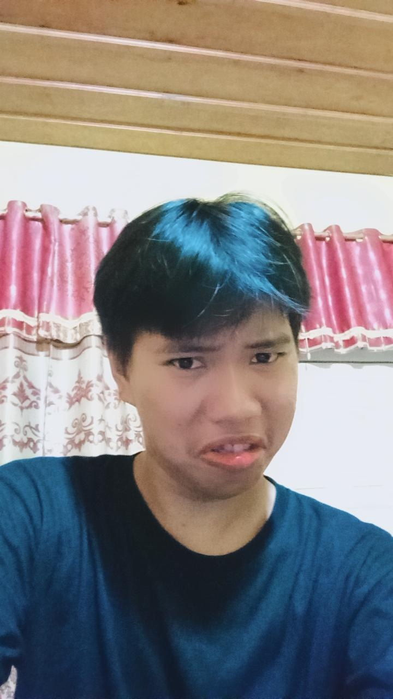

✦ Mahasiswa PPG Prajabatan 2025
Berasal dari ibu kota negeri, kini merantau ke kota istimewa untuk menempa diri menjadi seorang pendidik. Lahir di Jakarta, dibesarkan di tanah Lampung yang kaya budaya, dan kini mengabdikan ilmu informatika melalui Program Profesi Guru di Universitas Negeri Yogyakarta.
"Mendidik bukan sekadar mentransfer pengetahuan, melainkan menyalakan api semangat belajar yang tak pernah padam dalam diri setiap murid."

Tanah Kelahiran Kedua
Lampung Utara adalah kabupaten di Provinsi Lampung dengan ibu kota Kotabumi — sebuah daerah yang kaya warisan budaya, keindahan alam, dan semangat masyarakat yang hangat. Berikut keunikan yang membuat daerah ini istimewa.
Riwayat Akademik
[Nama SMA]
Lampung Utara
Lulus [Tahun]
[Nama Universitas]
Teknik / Pendidikan Informatika
Lulus [Tahun] · IPK [x.xx]
Universitas Negeri Yogyakarta
Pendidikan Informatika
Sedang Berjalan · 2024
Dokumentasi Mengajar
Kumpulan momen berharga selama kegiatan praktik mengajar pada PPL 1 di sekolah mitra.
Tempat Belajar & Mengajar
Jl. Colombo No.1, Karang Malang, Yogyakarta
[Alamat Sekolah], Yogyakarta
Ganti dengan nama sekolah PPL Anda
dan tempel embed link
Google Maps di sini
Hubungi Saya
Jangan ragu untuk menghubungi saya melalui berbagai platform di bawah ini. Saya terbuka untuk berdiskusi seputar pendidikan, teknologi, maupun kolaborasi pembelajaran.
PPL 1 · 2024
Produk dan dokumentasi rencana serta perangkat pembelajaran yang disusun selama pelaksanaan PPL 1 beserta analisis reflektifnya dalam berbagai aspek.
Selama proses penyusunan produk pembelajaran, beberapa kendala yang dihadapi meliputi: kesulitan menyesuaikan materi dengan kemampuan awal siswa yang beragam, keterbatasan waktu dalam merancang media interaktif berbasis teknologi, serta tantangan menyelaraskan tujuan pembelajaran dengan indikator capaian kurikulum Merdeka yang berlaku saat ini.
Penyusunan produk mengadopsi Konstruktivisme Vygotsky melalui scaffolding bertahap, Pembelajaran Berbasis Masalah (PBL) untuk mendorong berpikir kritis, serta kerangka TPACK — Technological Pedagogical Content Knowledge — dalam mengintegrasikan teknologi secara bermakna dengan konten dan pedagogi informatika.
Keberhasilan penerapan produk pembelajaran didukung oleh: pemanfaatan media digital yang menarik perhatian siswa, pendekatan pembelajaran kontekstual yang relevan dengan dunia nyata, antusiasme siswa dalam aktivitas berbasis proyek, serta iklim kelas yang kondusif dan kolaboratif selama proses pembelajaran berlangsung.
Komponen yang dapat disesuaikan untuk situasi kelas berbeda: modul dapat disederhanakan untuk kelas heterogen, media dapat dikonversi ke versi offline bagi sekolah dengan keterbatasan internet, alokasi waktu fleksibel sesuai jam pelajaran, serta tingkat kesulitan tugas dapat didiferensiasi berdasarkan kemampuan masing-masing peserta didik.
Rencana Pelaksanaan Pembelajaran · Pertemuan 1–2 · [Nama Mata Pelajaran]
Klik untuk melihat pratinjau dokumen PDF
Rencana Pelaksanaan Pembelajaran · Pertemuan 3–4 · [Nama Mata Pelajaran]
Klik untuk melihat pratinjau dokumen PDF
Rencana Pelaksanaan Pembelajaran · Pertemuan 5–6 · [Nama Mata Pelajaran]
Klik untuk melihat pratinjau dokumen PDF
dummy.pdf di kode HTML dengan URL "Preview" Google
Drive dokumen asli Anda. Pastikan akses G-Drive Anda sudah diubah
menjadi "Siapa saja yang memiliki tautan" (*Anyone with the
link*).
Klik untuk memutar video
Dokumentasi video pelaksanaan praktik mengajar siklus pertama dengan pendekatan Problem Based Learning. Menampilkan interaksi guru–siswa dan proses diskusi kelas.
Klik untuk memutar video
Dokumentasi video siklus kedua dengan perbaikan berdasarkan refleksi siklus sebelumnya. Menampilkan penggunaan media pembelajaran yang lebih variatif dan interaktif.
openVideo('LINK_YOUTUBE', 'Judul') di dalam kode
HTML. Pastikan Anda menggunakan URL format
embed (contoh:
https://www.youtube.com/embed/ID_VIDEO).
Dokumentasi Kegiatan 1
PPL 1 · [Tanggal]Dokumentasi Kegiatan 2
PPL 1 · [Tanggal]Dokumentasi Kegiatan 3
PPL 1 · [Tanggal]Dokumentasi Kegiatan 4
PPL 1 · [Tanggal]Dokumentasi Kegiatan 5
PPL 1 · [Tanggal]Dokumentasi Kegiatan 6
PPL 1 · [Tanggal]src
pada setiap gambar di atas dengan URL foto kegiatan PPL Anda yang
sesungguhnya.
Evaluasi Profesional
Penilaian dari Guru Pamong (GP) dan Dosen Pembimbing Lapangan (DPL) terhadap rancangan pembelajaran dan praktik mengajar selama 3 siklus PPL.
Pertemuan ke-1 & 2
Pertemuan ke-3 & 4
Pertemuan ke-5 & 6
"Rancangan pembelajaran sudah cukup baik. Perlu peningkatan dalam pengelolaan waktu dan variasi metode mengajar agar siswa lebih aktif terlibat."
"Penggunaan teknologi dalam pembelajaran sudah inovatif. Tingkatkan kemampuan membaca situasi kelas dan memberikan respons adaptif terhadap kebutuhan belajar siswa."
"Ada peningkatan signifikan pada siklus kedua. Mahasiswa lebih percaya diri dalam mengelola dinamika kelas. Lanjutkan dengan memperkuat pembelajaran berdiferensiasi."
"Perkembangan sangat positif. Media pembelajaran semakin kreatif dan tepat sasaran. Konsisten mendokumentasikan refleksi pembelajaran untuk pertumbuhan profesional yang berkelanjutan."
"Mahasiswa telah menunjukkan perkembangan luar biasa. Kemampuan mengajar dan merancang pembelajaran sudah melampaui ekspektasi. Siap menjadi guru profesional yang inovatif."
"Kompetensi pedagogis dan teknologis telah terintegrasi sangat baik. Mahasiswa telah menunjukkan profil guru masa depan yang diharapkan oleh dunia pendidikan abad ke-21."
Kompetensi Guru
Memahami karakteristik dan kebutuhan belajar setiap siswa untuk merancang pembelajaran yang inklusif, berdiferensiasi, dan benar-benar berpusat pada peserta didik sebagai subjek pembelajaran.
Menguasai konten informatika secara mendalam dan mengikuti perkembangan teknologi terkini untuk memberikan pembelajaran yang relevan, kontekstual, dan bermakna bagi generasi digital.
Membangun relasi positif dengan siswa, rekan sejawat, orang tua, dan komunitas sekolah untuk menciptakan ekosistem pendidikan yang saling mendukung dan berkembang bersama secara berkelanjutan.
Menjadi teladan bagi siswa dengan integritas tinggi, sikap reflektif, semangat belajar sepanjang hayat, dan komitmen kuat terhadap profesi kependidikan yang bermartabat dan mulia.
Karakter Guru Ideal
Hadir sebagai teman belajar yang memfasilitasi pertumbuhan siswa, mendorong mereka menemukan jawaban melalui eksplorasi mandiri.
Terus berinovasi dalam metode dan media pembelajaran untuk menjawab tantangan era digital dengan pendekatan kreatif dan adaptif.
Berkomitmen pada pencapaian hasil belajar optimal, menggunakan data dan asesmen untuk terus memperbaiki kualitas pembelajaran.
Membangun komunitas belajar bersama rekan guru, siswa, dan orang tua. Pendidikan yang baik adalah tanggung jawab bersama.
Secara konsisten merefleksikan praktik mengajar. Menjadikan setiap pengalaman — keberhasilan maupun kegagalan — sebagai pelajaran berharga.
Memastikan setiap siswa mendapat kesempatan belajar yang setara, menghargai keberagaman latar belakang dan kemampuan peserta didik.
Perjalanan Profesional
Menjalani Program Profesi Guru di UNY, mengembangkan kompetensi dasar mengajar melalui praktik nyata PPL di sekolah mitra.
Menyelesaikan PPG dan mendapat sertifikat pendidik. Siap mengabdi sebagai guru informatika dengan kompetensi penuh dan semangat mengajar yang tinggi.
Mengikuti pelatihan, workshop, dan program PKB (Pengembangan Keprofesian Berkelanjutan) untuk terus meningkatkan kualitas pembelajaran.
Berkontribusi lebih luas sebagai Guru Penggerak, mentor calon guru, atau pengembang kurikulum informatika demi kemajuan pendidikan nasional.